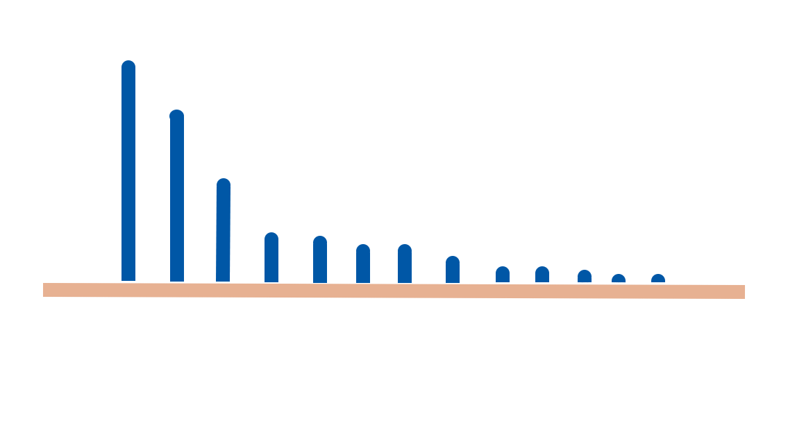

อาการของโรคโควิด 19
ในส่วนมากอาการเบื้องต้นของผู้ติดเชื้อก็จะมีไข้ 37.5 องศาเซลเซียสขึ้นไป ไอ มีน้ำมูก เจ็บคอ ถ่ายเหลว ไม่รับรส ตาแดง มีผื่น หายใจไม่สะดวก แต่ในบางกลุ่มที่มีอาการรุนแรง เช่น แน่นหน้าอก หายใจลำบาก ไอแล้วรู้สึกเหนื่อย อ่อนเพลีย เวียนศีรษะ ถ่ายเหลวมากกว่า 3 ครั้ง/วัน ปอดอักเสบ หน้ามิด ซึ่งหากมีอาการที่รุนแรงก็ควรเข้ารับการรักษาในโรงพยาบาล